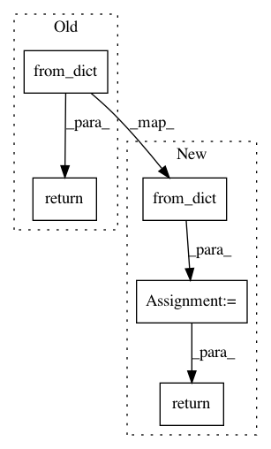

a522b59d2cae91ad8cf5b5c2e6b12a29af8744f5,torch_geometric/data/collate.py,,collate_to_batch,#Any#,25
Before Change
if "face" in keys:
pass
return Data.from_dict(batch)
After Change
if "face" in keys:
pass
data = Data.from_dict(batch)
data = data.contiguous()
return data
In pattern: SUPERPATTERN
Frequency: 4
Non-data size: 5
Instances
Project Name: rusty1s/pytorch_geometric
Commit Name: a522b59d2cae91ad8cf5b5c2e6b12a29af8744f5
Time: 2018-04-25
Author: matthias.fey@tu-dortmund.de
File Name: torch_geometric/data/collate.py
Class Name:
Method Name: collate_to_batch
Project Name: snipsco/snips-nlu
Commit Name: c18abcc72779987a43de35add51864a5143ba998
Time: 2018-01-18
Author: adrien.ball@snips.net
File Name: snips_nlu/intent_parser/probabilistic_intent_parser.py
Class Name: ProbabilisticIntentParser
Method Name: from_dict
Project Name: mlflow/mlflow
Commit Name: 48150ca1a44948be42cb8b829edee3671ac8b224
Time: 2020-04-23
Author: 58712524+andychow-db@users.noreply.github.com
File Name: mlflow/onnx.py
Class Name: _OnnxModelWrapper
Method Name: predict
Project Name: rusty1s/pytorch_geometric
Commit Name: 0afd71d97fab7ec19ab7900fa291fc63e441a883
Time: 2019-06-02
Author: matthias.fey@tu-dortmund.de
File Name: torch_geometric/utils/convert.py
Class Name:
Method Name: from_networkx